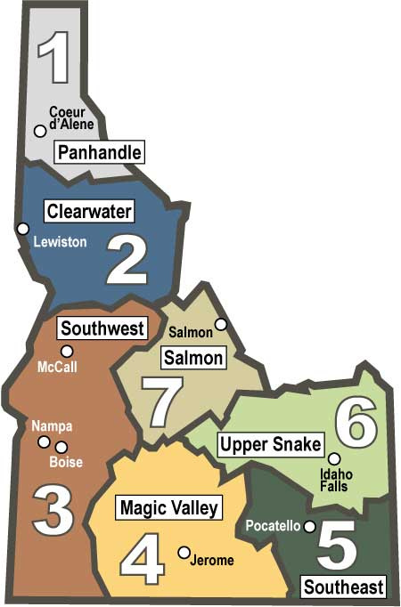
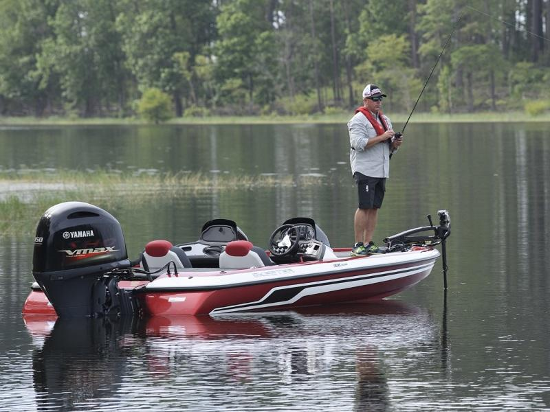

One of the most important things to learn when you first start fishing are the rules and regulations
Rules vary from state to state as well as region to region within Idaho
If you click on the image to the left or here you will open a new page the Fish & Game fishing rules website
You will need to understand what fish you can keep (some are protected) and how big they must be (there are limitations on minimums and maximums)
The first thing you need to find is the region you are fishing in Idaho and then look up the specific rules for that area
Here is a map of the regions in Idaho:

Here are some examples from the guidelines:
Bass (Largemouth and Smallmouth)
• Bass limit is 6, both species combined
• None under 12 inches
Brook Trout
• Brook Trout limit is 25
• Harvest allowed during any open season unless otherwise
noted under Special Rules – if gear or bait restrictions
are listed, they must be followed when fishing for Brook
Trout
Bull Trout
• Bull Trout limit is 0, catch-and-release
Wait, you're not done yet!

There are other restrictions as well when fishing from a vessle (a boat or float):
• Some bodies of waters do not allow any floating vessles
• Some will allow boats but no motors or electric motors
• Some that allow electric motors may also require you to remove a gas motor if installed
• Make sure you are aware of the rules before putting a boat in the water